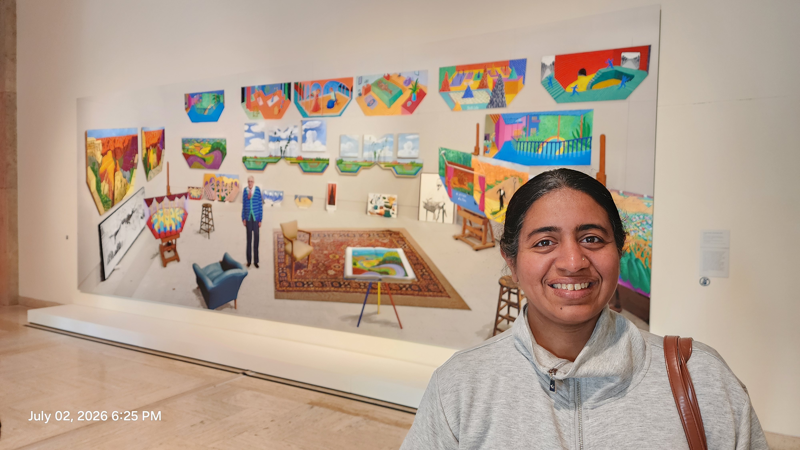

I went to the Portland Art Museum on a First Thursday — free entry — specifically for the David Hockney show. All the banners, all the buzz, everyone talking about how groundbreaking his work was — and I wanted to see it for myself.
Honestly, I didn't like most of it. Some of it, especially the iPad drawings — Rain on the Pond and Water Lilies in the Pond with Pots of Flowers, both 2021 — I actively disliked. There was an upside-down acrobat in Parade, his 1981 poster for the Metropolitan Opera — something about the costume, with the words "Metropolitan Opera N.Y. 1981" lettered right into the piece like book spines — that I actually loved, and photographed thinking it could make a great lesson for kids, even without fully understanding it myself. I also loved the concept behind his Moving Focus series — a courtyard scene built from shifting viewpoints instead of one fixed perspective, with a simple line-drawn chair sketched into each end in a completely different style from the rest. Not something I loved the way I loved the sunflower, but a real idea worth teaching.
But then there was a cubist-style portrait of a friend of his, a fashion designer — she looked Asian, I think, painted in a red dress, her own style clearly part of what the portrait was celebrating — done in a Picasso-like way, and I just couldn't get past it. I didn't even take a photo of it. I can't look at something broken apart for long enough to photograph it. I've never been able to like Picasso's work either, for the same reason: when something looks broken apart, it pains me, and I can't find joy in it, so I avoid it.
That's never happened to me before with an artist's entire body of work — loving some pieces, admiring the ideas in others, and rejecting some completely, no matter how much everyone else in the room was praising all of it. But I made myself see everything. The show spanned two full floors, and I went through every single piece, even the ones I disliked. I wasn't going to let my first reaction decide the whole visit for me.
Somewhere in there I also had to send my husband and kids — 14 and 9 — out of the hall after we turned a corner into some nude paintings of two men. They still bring it up. "Why did you take us there."
Then I got to a sunflower.
It was an etching and aquatint, and I stood in front of it for more than ten minutes. The lines looked like the curled, cut edges of gauze fabric — that exact texture, flawless, no visible gap or overlap anywhere. I kept trying to work out how it was even done. Vertical lines first, then horizontal? Or the other way around? A stranger next to me was just as stuck on it, and we ended up talking it through together — two people who'd never met, both trying to reverse-engineer one flower.
The only etching I knew before that day was the kind done on steel wedding gifts back home in India — you etch the bride's or groom's name into a vessel, and that's it, that's what "etching" meant to me. Standing in front of that sunflower, I realized I didn't actually know anything about etching at all. No photo I took could capture what it actually felt like standing in front of it.